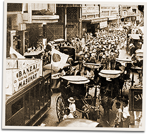

|
j
a v a s c r i p t |
May 8, 1942

Victory Celebration
We are supposed to display the Japanese flag today. Several cars with banners proclaiming the Japanese victory made the rounds of the city. Accompanying them were a number of trucks with musicians to attract attention. "Have your flags ready!" said the Tribune, for Homma, who'll arrive in Manila tomorrow between 1200 and 1230 — lunch-hour (people on the streets). The Mayor asked the people to line up at Avenida Rizal. A few are nervous or even scared, but not the cochero who was taken to task by a friend of mine for flying a small flag on the harness of his horse. Asked if he was pro-Japanese, he flew into a rage, whipping his horse every time he swore against the Japanese, until my friend cried out for him to stop. Transcripts of Wainwright's speech were broadcast at 1300 and 1700. Manila was terribly sad but no less loyal. The BBC report of a naval battle around the Solomon Islands will be on the agenda for discussions tomorrow, and hopefully spirits will perk up. Mrs. Tamesis went to see her husband — a Captain at O'Donnell. They got to within 15 paces from each other when a Japanese officer stopped him with three vicious slaps. Then he turned and slapped the approaching wife once, saying, "You go Manila — don't come back." Mrs. Zobel was also turned back, but she returned with an officer escort provided by Homma, and so was able to see her husband for five minutes. |
|
|
|
|